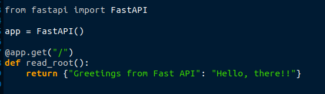
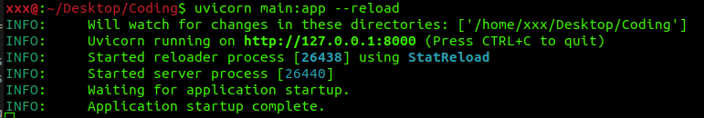
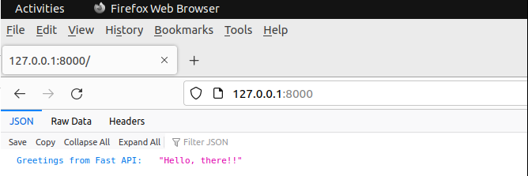
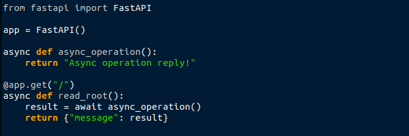
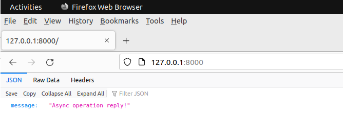
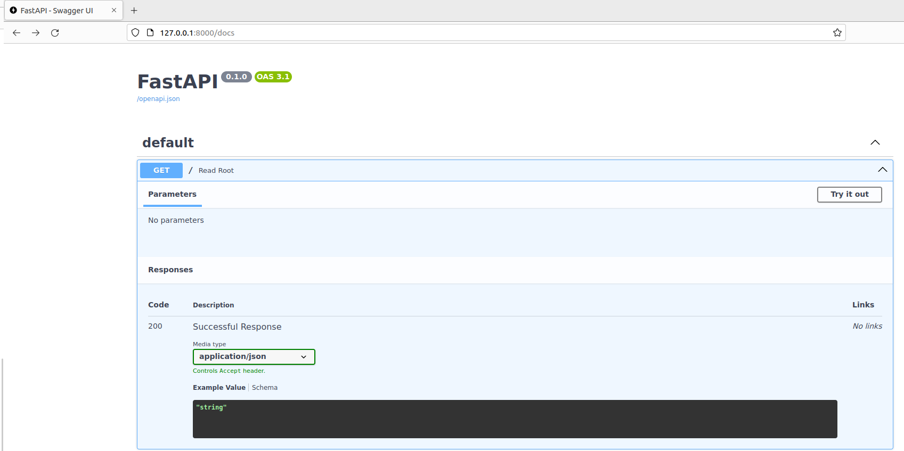

Power of APIs: FastApi
In the dynamic realm of AI development, the pivotal role of APIs (Application Programming Interfaces) cannot be emphasized enough. API plays a crucial role in communication between software applications and data points. FastAPI is a web framework for Python that simplifies process for crafting APIs with speed and efficiency.
Intelligent Endpoints
FastAPI excels at integrating AI capabilities into APIs. "Intelligent Endpoint" refers to designing and implementing API endpoints that leverage artificial intelligence (AI) capabilities to perform tasks such as data analysis, natural language processing, machine learning, and more. In the context of web development, this involves integrating AI models or algorithms into API to provide intelligent and data-driven responses to client requests.
Getting Started with FastApi
Setting up a FastAPI project requires just a few lines of code to have a robust web application ready to go. FastAPI's lightweight and high-performance nature makes it an excellent choice for projects prioritizing efficiency and optimal performance.
 
#In above example, a simple endpoint "Hello, there!" has been created.

#Reply from app
Native Asynchronous Power
FastAPI embraces asynchronous programming, making it an ideal choice for AI applications that require efficient handling of concurrent tasks. Asynchronous support enables APIs to integrate with asynchronous AI workflows, enhancing overall responsiveness (time to handle each request).

Above example, presents a basic API endpoint using FastAPI. Endpoint replies with "Asynch operation reply!" when a GET request is made to the endpoint.
await async_operation() allows for the suspension of the read_root function until the asynchronous operation (async_operation) completes, ensuring that other asynchronous tasks can run in the meantime. This is a fundamental aspect of asynchronous programming in Python, enabling efficient handling of concurrent tasks and avoiding blocking operations.

#Reply from app
Testing and Documentation
Once the application is running, web browser provides basic Api documentation on "http://127.0.0.1:8000/docs" (default setup made) generated as the "Swagger".
